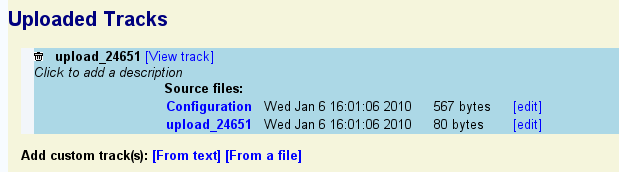
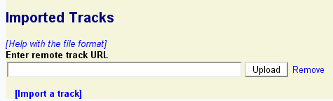

To select a region of the genome to view, enter its name in the text
field labeled "Landmark or Region". Recognized types of names are
under the control of the administrator, but usually the following
names are accepted:
To select a region of the genome to view, enter its name in the text
field labeled "Landmark or Region". Recognized types of names are
under the control of the administrator, but usually the following
names are accepted:
| Selecting Regions | Overview Panel | Detail Panel | Adding Annotations | Quick Uploads |
|---|
To select a region of the genome to view, enter its name in the text
field labeled "Landmark or Region". Recognized types of names are
under the control of the administrator, but usually the following
names are accepted:
If the landmark is found in the database, the browser will display the region of the genome it occupies. The region is displayed in three graphical panels:
At the administrator's option, some kinds of landmarks may have to be qualified using the format prefix:landmark. For example, a clone named "c23" might need to be searched for using "clone:c23".
You can view a precise region around a landmark using the notation landmark:start..stop, where start and stop are the start and stop positions of the sequence relative to the landmark. The beginning of the feature is position 1. In the case of complex features, such as genes, the "beginning" is defined by the database administrator. For example, in the C. elegans data set, position 1 of a predicted gene is the AUG at the beginning of the CDS, so to view the region that begins 100 base pairs upstream of the AUG ends 500 bases downstream of it, you would search for mek-1:-99..500.
This offset notation will work correctly for negative strand features as well as positive strand features. The coordinates are always relative to the feature itself.
To offset relative to a qualified feature name, just include the type name, as in PCR_Product:sjj_K08A8.1:-500..500 (note that this particular example only works with the C. elegans database).
Anything that you type into the "Landmark or Region" textbox that isn't recognized as the name of a landmark will be treated as a full text search across the feature database. This will find comments or other feature notations that match the typed text. Depending on how the database is set up, you may find gene names, gene functions, author names, or bibliographic references.
If more than one landmark or keyword search is found, then the browser will display a graphical representation of the whole genome and summarize the various hits in a table. You can click on one of the landmarks in either the graphical display or the table in order to view it in the detail view:
Once a region is displayed, you can navigate through it in a number of ways:
The detailed view is composed of a number of distinct tracks which stretch horizontally from one end of the display to another. Each track corresponds to a different type of genomic feature, and is distinguished by a distinctive graphical shape and color.
Each track has a descriptive name printed above it, and a series of small control icons to the left of the name.
 . This will pop up a window containing a
link that you can cut and paste into another instance of the
Generic Genome Browser. Please see Importing
Tracks for more details.
. This will pop up a window containing a
link that you can cut and paste into another instance of the
Generic Genome Browser. Please see Importing
Tracks for more details.This browser supports uploading your own data set tracks. You can then share these tracks with other individuals and groups.

To upload a custom track to the browser, click on the link labeled "Upload and Share Tracks" located towards the top of the screen. This will open a new text editing area. Type in one or more lines of genomic feature information following the example in the screenshot below. The simplest upload format is called BED, and takes three space-separated fields:
<chromosome> <start> <end>
Where <chromosome> is the name of the chromosome that the feature lives on, and <start> and <end> indicates the range that the feature spans. (The BED format uses zero-based coordinates, so the first base of the chromosome is actually position 0. Other formats accepted by GBrowse use the more familiar one-base coordinates.).
Press the "Upload" button. The indicated features will be uploaded to GBrowse and information about the upload set will be displayed in a new section similar to this one:

To view your uploaded annotations in a new browser track, click on the "View track" link. Note that you may need to navigate to the region of the genome containing the annotations in order to see them. To edit the annotations, click the "edit" link to the right of the name of the upload file (in this example "upload_24561").
To customize the appearance of the track, press the "edit" link to the right of the "Configuration" line. Note that this involves editing a configuration file that has many options. You can perform all basic customization tasks such as changing the height and color of your uploaded features, much more conveniently by clicking the "?" icon next to the track itself.
To add a description to the uploaded set, click on the line that reads "Click to add a description" and type in a one-line description of the data. Press the escape key to undo the changes. Press return or mouse out of the description area to accept the change.
To delete the uploaded annotation data completely, click the trash can icon.
To share an uploaded track with another person, go to the main browser tab
For anything more than a short list of annotations, you will want to prepare your custom track(s) in a file on your local machine and upload the file to GBrowse. This is also mandatory for file formats that require fields to be separated by tabs rather than spaces. Use a text editor to prepare the track definitions and data and be sure to save as text only. Now click on the "From a file" link in the upload area, and follow the prompts to upload the file.
You can upload or type in as many annotation files as you desire. If you upload a new file with exactly the same name as an old one, it GBrowse will rename the new file by appending a "-1" to its end to avoid your inadvertently overwriting the old file. To replace an existing file, delete the old one before you upload the new one.
GBrowse accepts custom track data in a variety of formats including BED, GFF, and GFF3. For dense quantitative data use Wiggle (WIG) format.
GBrowse also accepts a simple internal format called feature file format (FFF). The main advantage of this format is that it allows for extensive customization of the appearance of each track and feature.
In most cases, you can define multiple tracks in a single file by creating several "track" definition lines in BED or WIG format files, or by defining several track configuration sections in FFF format files. See the documentation of each format for assistance.
In addition to these genomic formats, you can upload dense genomic sequencing data in BAM or SAM format. This feature requires the administrator of the particular database on which GBrowse is running to have installed the BAM support libraries and to have initialized a genomic sequence track. At low magnifications, uploaded BAM/SAM tracks will show a coverage graph of the data. At higher magnifications, they will show individual reads and the alignment between the reads and the genome.
GBrowse allows you to import track data from a variety of remote locations, including:
To import a track from a remote source, you must know its URL.
To import a track from another GBrowse instance, click on the
radio wave () icon in the track
title and then copy the URL that appears there. Go to the "Upload and
Share Tracks" panel, and click on the "Import a track" link. This
will open up a new text field. Paste in the copied URL and press
"Upload".

If the remote track was successfully imported, a description of the remote track similar to the previous section's listing of uploaded tracks will appear.
To import a track from a Web or FTP file, make sure that the web or FTP server is accessible to the machine on which the GBrowse instance is running, and that file is in one of the upload formats recognized by GBrowse (e.g. BED or GFF3). Then click the "Import a track" and paste in the annotation file's URL as before. To import a track from a DAS server, identify the URL used by the DAS server for the desired track. The DAS registry will help you locate DAS servers with useful genomic data. Then cut and paste the DAS server URL into the remote track URL box as before.
You may add as many remote tracks as you wish. To delete one, simply click on the trash icon next to its name in the remote track listing.
A quick way to upload one or two features is by adding an "add" argument to the gbrowse URL. For example, this URL will create a track named "MyDeletions" containing a feature named "Deletion3". Deletion3 occupies the region on chromosome chrI between 100,000 and 150,000:
http://gbrowse_url/?add=chrI:100000..150000
or a multipart feature with segments at 100000..110000 and 120000..130000:
http://gbrowse_url/?add=chrI:100000..110000,120000..130000
You can have as many "add" options as you like:
http://gbrowse_url/?add=chrI:100000..110000,120000..130000;add=chrI:80000..90000
To label the track and the features within the track, you may use the extended format shown here:
reference+trackName+featureName+start..stop,start..stop,start..stop ...
where "reference" is the name of the chromosome or contig, "trackName" is the name of the new track you wish to place the feature in, and "featureName" is the name of the feature you are uploading. As before, the list of "start..stop" coordinates are the start and end coordinates relative to "reference". For multisegmented features, specify multiple start..stop pairs separated by commas.
For more control over the way quick upload features appear, specify the "style" option to the URL:
http://gbrowse_url/?style=MyDeletions+glyph=arrow+double=1+fgcolor=blue
This says to configure the "MyDeletions" track with the following options:
glyph=arrow double=1 fgcolor=blue
See the uploaded annotation help file for more details
.